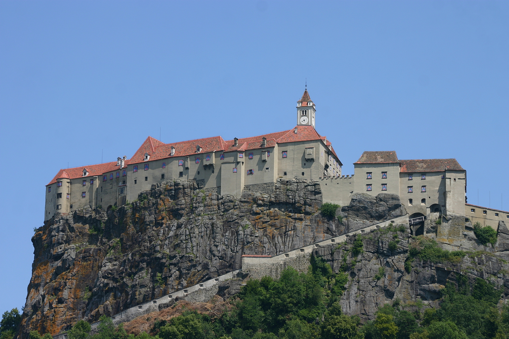

Marktgemeinde Riegersburg

Riegersburg ist der Genuss-Hotspot der Südoststeiermark. Rund um die mächtige Burg, die auf einem 482 Meter hohem Vulkanfelsen thront, haben sich zahlreiche Genuss-Manufakturen angesiedelt.
Seit 2015 besteht die Gemeinde aus den ursprünglichen Gemeinden Riegersburg, Lödersdorf, Breitenfeld und Kornberg.
Quick-Facts
- Bezirk Südoststeiermark
- 71,12 km²
- 4.953 Einwohner (Jan 2019)
Ortsteile
(in Klammern: Einwohner)
- Altenmarkt bei Riegersburg (446)
- Bergl (303)
- Breitenfeld an der Rittschein (380)
- Dörfl (200)
- Edelsgraben (124)
- Grub I (78)
- Krennach (423)
- Lembach bei Riegersburg (342)
- Lödersdorf I (581)
- Lödersdorf II (114)
- Neustift (144)
- Oberkornbach (123)
- Riegersburg (685)
- Sankt Kind (274)
- Schützing (433)
- Schweinz (303)
Quick-Links